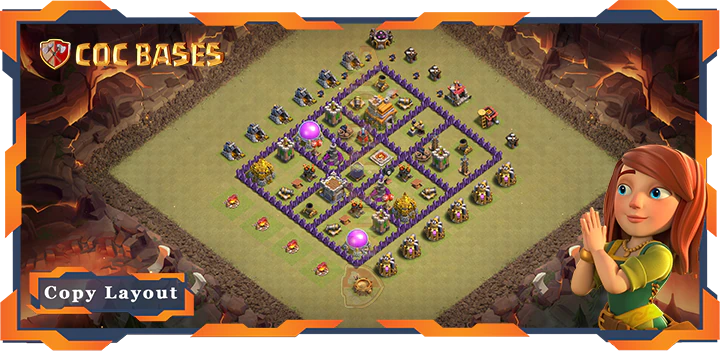
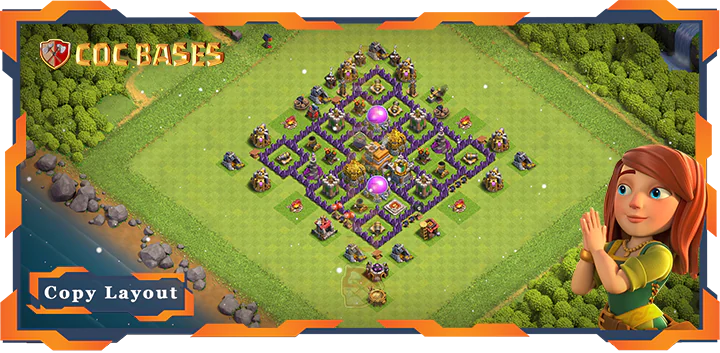
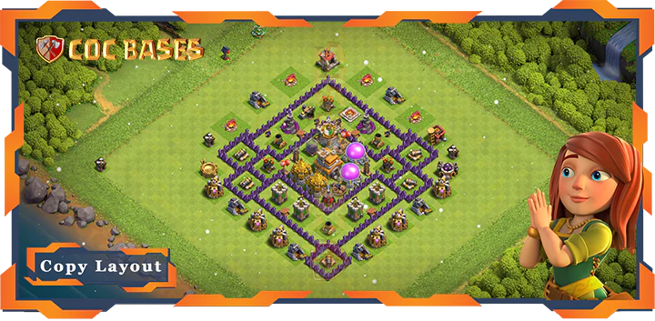
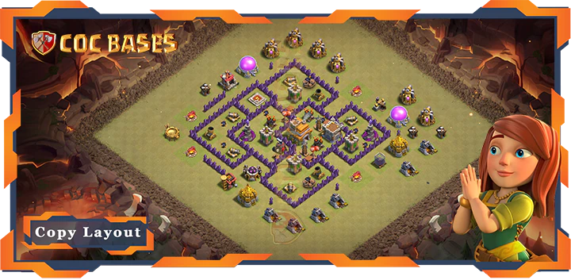
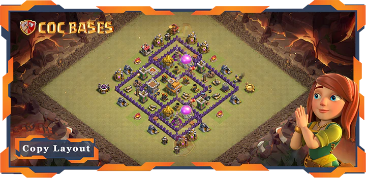
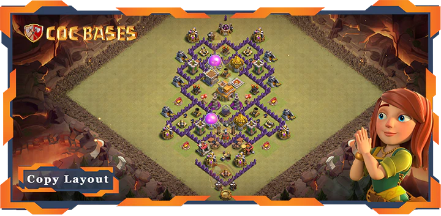
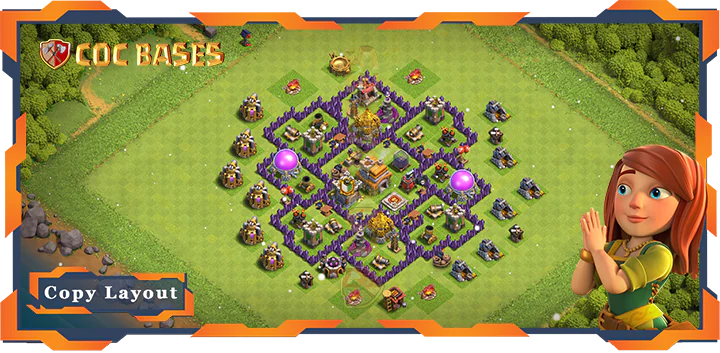
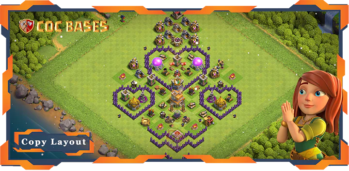
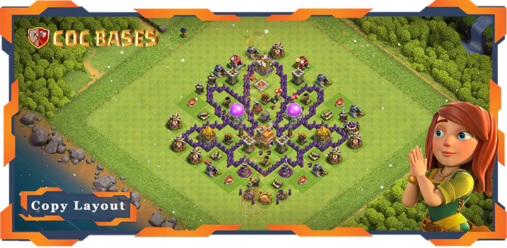

Make your Clash of Clans village tough to beat with our top Town Hall 7 bases! Town Hall 7 is a beast level, loaded with strong defenses like Hidden Teslas and Air Defenses. Whether you’re fighting in Clan Wars, saving loot, or climbing trophies, our fresh TH7 Bases stop attackers dead. Copy the best TH7 Base Layouts with links. These are the updated Townhall 7 Layouts after the latest Clash of Clans update. Jump in and grab awesome Townhall 7 Bases to crush every battle!
About Town Hall 7
Town Hall 7 is a powerhouse in Clash of Clans. It costs 1,200,000 gold to upgrade from Town Hall 6 and takes 1 day. Your village gets a cool look with a glowing Town Hall. Townhall 7 Bases unlock awesome defenses like Hidden Teslas, which shock enemy troops, and Air Defenses that blast air units. You also get level 8 walls and strong troops like Dragons and Giants. These make layouts great for stopping TH7 attacks like Giant-Healer combos, Dragon spam, or Hog Rider rushes.
Town Hall 7 is a favorite for players who want to rule wars and leaderboards. Supercell’s updates, like tweaks to Hidden Tesla damage, keep the meta fresh. Your bases need to stay new to keep up. Our site has the latest COC designs to protect your TH7 village, whether you’re in Clan War Leagues or guarding loot. Go to bases-coc.com/bases/th7/ to copy bases made by top players. Videos show how they stop real TH7 attacks. Town Hall 7 is all about power, and our TH7 Bases keep you ahead.
Categories of TownHall 7 Bases
Your TH7 bases come in different types to fit how you play Clash of Clans at Town Hall 7. Each needs a special layout to work best against TH7’s attacks. Here are the main categories, inspired by bases-coc.com, with designs you can copy:
War/CWL Bases: These are for TH7 Clan Wars and Clan War Leagues. They stop three-star attacks from armies like Dragon spam or Giant-Healer. Hidden Teslas and Air Defenses go in the center. Level 8 walls slow enemies down. Air bombs block TH7’s Balloons. Spring traps catch Hog Riders. Our war COC designs are tested against TH7 war attacks. Copy them at bases-coc.com/bases/th7/ to win wars.
Farming Bases: These save TH7’s gold and elixir. Storages go deep inside, guarded by maxed Wizard Towers and Mortars. Walls make tight compartments to stop TH7 troops like Giants. The Town Hall is often outside to trick attackers away from loot. Giant Bombs stop ground attacks. Copy farming TH7 Layouts from our site to keep your TH7 loot safe while upgrading.
Hybrid Bases: These protect loot and trophies for TH7 players. They guard storages and the Town Hall with defenses like Cannons and Archer Towers. Hidden Teslas surprise TH7’s Giants or Hog Riders. They’re good for players who want both. Our site has hybrid designs that handle TH7 raids and trophy pushes. Copy them with links.
Anti 2 Stars Bases: These stop two-star attacks in TH7 wars or trophy matches. Defenses spread out to make attackers work hard. Mortars and Bomb Towers cover outer areas. Air bombs mess up TH7’s Balloon spam. Copy anti-2-star bases from bases-coc.com/bases/th7/ to keep enemies at one star.
Anti 3 Stars Bases: These block three-star attacks in TH7’s tough war scene. Compact layouts with central Hidden Teslas and layered walls tire out armies like Dragons. Spring traps stop TH7’s Hog Rider rushes. Our anti-3-star COC designs work against TH7 war plans. Copy them at bases-coc.com/bases/th7/.
Anti Air/Electro Bases: These crush TH7’s air attacks, like Dragons and Balloons. Maxed Air Defenses, air sweepers, and seeking air mines go in key spots. Walls push ground troops into Bomb Towers. These layouts destroy TH7’s air-heavy armies like Dragon spam. Copy anti-air/electro Townhall 7 Bases from our site to beat air raids.
Anti Trophy Bases: These make trophy pushing hard for TH7 attackers. The Town Hall sits in a strong core. Clan Castle troops like Wizards mess up TH7’s Giant-Healer or Barbarian attacks. Defenses balance to counter TH7’s top strategies. Grab anti-trophy designs at bases-coc.com/bases/th7/ to hold your TH7 rank.
Funny/Troll Bases: These trick TH7 attackers for fun. They might leave the Town Hall open but hide Hidden Teslas or Giant Bombs to punish greedy raids. They catch TH7’s Barbarians off guard. Copy funny/troll bases from our site to mess with players in casual TH7 matches.
Legend League Bases: These are for TH7’s Legends League, where pros use attacks like Dragon rushes or Giant-Wizard combos. The Town Hall is in the center, guarded by maxed Wizard Towers and Air Defenses. Layered defenses stop TH7’s high-skill armies. Copy them at bases-coc.com/bases/th7/ to climb TH7’s ranks.









FAQs
TH7 War Bases with central Hidden Teslas and air defenses rock. Copy them from bases-coc.com/bases/th7/.
Use Farming Bases with storages inside, Hidden Teslas in the center, and walls to slow attackers. Check the designs from bases-coc.com/bases/th7/ for ideas!
Anti Trophy bases, which trap attackers with defenses, work best for this. Copy them from our website for easy trophy protection.
Conclusion
Choosing the right base for Town Hall 7 is critical in maintaining a strong defense and progressing in Clash of Clans. Whether you're focusing on war, farming, trophy pushing, or simply having fun, there's a layout that suits your playstyle. By using the latest designs available, you'll be able to protect your resources, defend against enemy troops, and ultimately secure your place as a dominant TH7 player. Don't forget to visit bases-coc.com/bases/th7/ for a wide variety of base layouts, videos, and expert tips to make the most of your TH7 base.